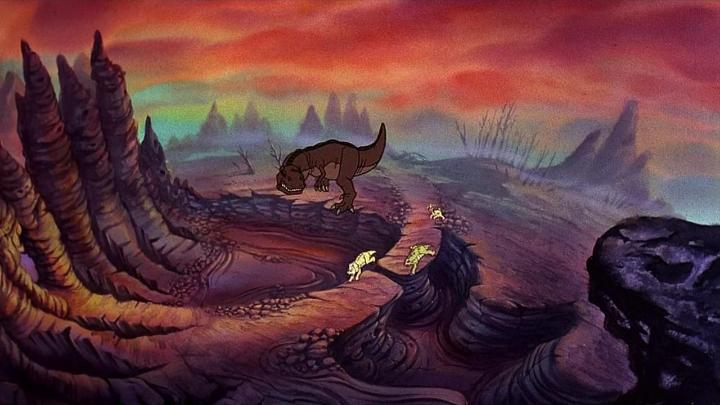

"The Land Before Time" is probably the best known franchises started by American animator Don Bluth. I don't think I ever saw the original film as a kid, but I certainly saw some of the direct-to-video sequels. There were ultimately 14 movies in the series, the most recent coming in 2016. A little ridiculous, yes, but each is stand-alone enough to pick at random, and about as child-friendly as you can get. Young kids like the cute characters. And they're dinosaurs! Who doesn't like dinosaurs? But the 1988 original film deserves a little more credit, and it's clear why it's a classic for both children and adults today. Steven Spielberg and George Lucas both produced the movie for example, and this was five years BEFORE Spielberg's megahit "Jurassic Park" came out. In retrospect, it's easy to see direct inspirations from the "Rite of Spring" short in Disney's "Fantasia," as well as "Bambi," but also how "Before Time's" new ideas directly inspired several dinosaur movies that came after. That includes Disney's own CGI film "Dinosaur," in a rare case where a rival studio beat Disney to the punch on a classic story or theme. When you think of dinosaur cartoons, it's Don Bluth's movie that comes first. The movie takes a fairy-tale tone and describes a unique culture to the dinosaurs to make them understandable to a wide audience. We see the birth of Little-Foot, a new youngling in a dwindling family of "Longnecks" (Brontosaurus, or technically a Apatorsaurus). The green plants around them grow sparse as the climate changes, so they begin to migrate a long distance in hopes of finding the mythical "Great Valley," where food and water is plentiful. Despite multiple types of dinosaurs being in the herd, they each stick to their own kind and rarely help or speak to one another. After an attack from a "Sharptooth" (T-Rex) and a great "earthshake" (quake), Little-Foot's mother dies and the child gets separated from his grandparents, the last of his herd. Striken with grief and alone, Little-Foot must build the courage to press forward to join the others in the Great Valley.Along the way he finds other children from his herd that also got separated. That includes the bully "three-horn" Cera (I always thought it was spelled Sarah, but Wikipedia corrects me), the talkative "swimmer" Ducky, the scared "flyer" Petrie, and the hungry and mute "spiketail" Spike. The bunch have to stick together and get along, and be exceptionally resourceful, to survive the long journey. There are dangers along the way, including predators (the T-Rex stalks them as the main antagonist), volcano lava and tar. They don't tend to get along, a good message for children on how to behave properly to make friends. But even for adults, it's endearing to see young children rise to the occasion to succeed in dire situations, especially with the beautiful musical score in the background. The story is simple, but feels grand, and doesn't outstay its welcome with an efficient runtime of barely an hour.  I was pleased when the movie was released on Bluray, but honestly, "The Land Before Time" does not look great in the transfer, likely due to the age and poor archiving. Some shots look sharp, but most look blurry and horribly grainy, as if they came from an old VHS tape. The colour palette also strives to be more earthy and realistic (sort of) compared to later sequels, which limits the appeal. The character animation is good though, with Don Bluth's style working well for the baby versions of each dinosaur, and portraying a great sense of scale in the adult dinosaurs several times their size. It's easy to dismiss "The Land Before Time" as just another kid's movie, and it's great as that. But the 1988 movie deserves a bit more credit for being exceptionally solid in its simplicity.
- "Ani" More reviews can be found at : https://2danicritic.github.io/ Previous review: review_The_King_and_I Next review: review_The_Last_Unicorn